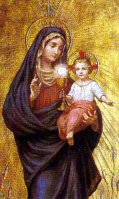
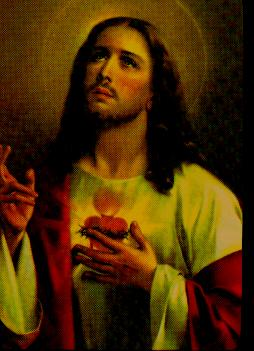

SEIGNEUR les a guidás pour rencontrer et adorer le GARON - DIEU.
 - JOSEPH, MARIE
et JÉSUS ont reu la visite des Trois Hommes Sages que sont venus de l'Est. L'toile du
- JOSEPH, MARIE
et JÉSUS ont reu la visite des Trois Hommes Sages que sont venus de l'Est. L'toile du
Le Roi Hrode, Gouverneur de Juda, a été inform par les scribes et des personnes sages du court, sur la visite des orientales aussi bien quel la raison de leur visite. Il est devenu jaloux et avec peur de perdre le pouvoir. Dans l'criture Sacrée, cest crit que "le Roi des Juifs" natrait dans Bethlàem. Hrode que avait l'esprit pervers a planifi de tuer JÉSUS. Il a invit les Trois Hommes Sages par le visiter et les a indiqu la direction de Bethlàem, en faisant une recommandation: au retourner, que vous passiez par ici et laissiez le adresse de Lui, parce que je veux aussi le adorer. Cependant, ils ont été avertis en rve par un Ange qu'ils devraient prendre un chemin différent après leur visite le JÉSUS, tourner par son patrie a travers de l'autoroute de Hbron, et quils ne revinssent pas Járusalem pour informer au terrible Roi où était le GARON. Quand le Roi a su que les Trois Sages nãont passé pas pour trouver lui et que suivaient par son patrie, il est restá furieux.
La Famille Sacrée aussi est allé informãe en rve par làAnge du SEIGNEUR, quHrode avait ordonn de tuer tous les enfants avec moins de 2 ans que avaient nós Bethlàem et pour cela, il est prvenu que eux soient allés par le Egypte et ils restassent là jusqu' la mort du Gouverneur qui s'est passée après six mois approximativement. Dans làpoque, Joseph et MARIE ont été informás en rve par l'Ange du SEIGNEUR et ils sont revenus leur patrie.
Comme ils avaient la intention de revenir Bethlàem, l'Ange du SEIGNEUR les a prvenus que ArchÉlaos, le fils de Hrode, le successeur au Gouvernement de Juda était aussi cruel et mchant de la même manire que son père. Alors, ils ont dácidá de retourner Nazareth.
Ainsi, dans leur petite maison Nazareth de Galilàe, ils étaient finalement capables de cultiver la vie de la famille paisiblement. JÉSUS a grandi en sagesse et a amÉlior de plus en plus en la profession de charpentier, qu'avec zÉle a appris de Joseph. N'est pas difficile d'imaginer leurs dialogues dans ces jours: "Mon fils, vous pouvez aller au march pour acheter une nouvelle scie, une portion d'illets et un ciseau. Quand vous revenez maison allez d'abord chez Ezquiel pour voir si sa sant est meilleure. Alors, donnez-lui mon êtreinte et mes votes de rcupération". Sans doute, les choses se passaient de cette façon. JOSEPH et MARIE vivaient dádi au travail, mais aussi l'immergs profondáment dans le "Mystre de JÉSUS". Ils n'avaient jamais dout de la vrit des promesses de DIEU, même devant les difficults que apparaissaient et aussi dans la routine des jours toujours mystrieuse pour eux, mais remplie de bonheur. Comme nous croyons dans la prsence du SEIGNEUR JÉSUS en l'Hostie Consacré, ils croyaient aussi dans la prsence de DIEU au Fils que les a été donn. Un mystère exige la Foi et non l'Entendement.

LA VIE PUBLIQUE DE JÉSUS
 - Le SEIGNEUR JÉSUS avait 30 ans
quand JOSEPH est mort. Donc, JÉSUS a compris que c'était le temps de
- Le SEIGNEUR JÉSUS avait 30 ans
quand JOSEPH est mort. Donc, JÉSUS a compris que c'était le temps de
IL a été au rencontre de Jean-Baptiste que ralisait un Baptme de Pénitence dans le rivire Jordanie, cété de la Mer Morte, en prparant des gens pour l'arrive du Messie. JÉSUS avec un admirable geste de complàte dáhumilit, comme se soit allé d'un simple pécheur, a demandá et a été baptisó. IL avait assum la condition de pécheur comme une dámonstration d'obissance au CRÉATEUR et aussi, comme d'un grand amour pour l'humanit.
Dans la sequence naturel des jours, IL a choisi les 12 Apêtres pour commencer le Travail que le SAINT PÈRE avait confi LUI et par que ils sont allés tmoins de SON merveilleux Ouvre et de SON Rsurrection. Et alors, avec le plus grand engagement et dáun incommensurable amour, a excut le SON prcieux travail de manire impressionner pour SON tendresse et dávouement au CRÉATEUR et làhumanit des toutes gnrations.
Les juifs, dans la majorit, espérait que le Messie soit allé un roi fort, un grand et intrpide guerrier. Ils croyaient que ce roi librerait IsraÉl du pouvoir Romain et dátruirait toutes les nations que au long des annes ont apport la ruine leur pays. Ils pensaient et en songeaient avec son pays en ayant un grand pouvoir militaire, en tant capable de dátruire leurs ennemis et d'occuper de nouveaux territoires, en se rendant une nation respecte que construirait leur futur avec les victoires et conquêtes du Roi.
Cependant, le vrai Messie est venu, non comme un dominateur sanguinaire, mais comme un autre Homme três différent, que usait armes ne connu pas pour làhumanit, parce que IL est venu enseigner l'amour et IL a tabli une guerre sans armes, contre le diable.
JÉSUS a rpudi la guerre contre Rome quand IL a dit:
"Rendez Csar ce qui est Csar, et DIEU ce qui est DIEU. Et ils furent son gard dans l'tonnement"... (Marc 12,17)
JÉSUS a dátruit le royaume de Satan, a retir les dámons et tous les esprits impurs que l'ont tortur et l'ont possódá les personnes, et IL a recommandá le respect les Lois, le pratique le bien, la justice, le droit et l'obissance aux Commandements de DIEU.
IL a parlà dans les synagogues où IL a lu des textes bibliques et làenseignait de façon authentique, avec un style simple d'enseigner dans une langue facile quensorcelaient toutes les personnes, et avec une autorit totalement différente que les scribes et les pharisiens ne possódaient pas. Mme quand IL faisait le bien, toujours de une manire naturel et discrtement, c'était dans la vidence, pour SES des miracles notables, des exorcismes, des cures de maladies admirables de la foule, la rcupération de la vision aux aveugles, et jusqu en ressuscitant morts. IL restaurait la sant toutes des personnes qui LE cherchaient. Par consóquent, la multitude a commenc invoquer le nom du Messie et LE suivre par où IL soit allé, en remerciant DIEU pour la prsence bénit de ce Prophte admirable.
Nºanmoins, la plupart des juifs gardait leur forte conviction d'attendre un Messie quait été comme un grand chef politique et militaire. Pour cette raison, devant la ralit de JÉSUS, ils ont commenc se sentir malheureux sans persistance et sans courage de pratiquer et de suivre la doctrine du SEIGNEUR. Ils ont se rvolt contre LUI et ils ont projet dáÉliminer le SEIGNEUR.
JÉSUS est allé prisonnier, et soumis un jugement tendancieux et faux. IL a été flagellà de manire sauvage, a été dáclar coupable et condamn mourir dans la Croix. Silencieusement, IL a souffert toutes les offenses, les blasphâmes et les mauvais traitements, comme si ces actes faisaient partie du processus normal de la condamnation. Et IL a fait ceci, comme dámonstration de une hroùque et persóvrant de obissance au SAINT PÈRE et de un amour immense et sans mesure pour chacun de nous. IL a assum les péchés de toute l'humanit et IL est mort crucifi parmi deux voleurs. Cependant, le CRÉATEUR l'a Ressuscit et l'a plac dans la gloire ternelle. JÉSUS, le FILS bien-aim, IL a excut dignement la sublime mission de Racheter et de Sauver làhumanit des toutes les gnrations et aussi a laissó des manires efficaces pour chaque personne de sanctifier son existence, en ordre d'être heureux dans cette vie et d'atteindre l'ternit.
MARIE DE NAZARETH est allé la MÈRE prcieuse de que Le SEIGNEUR avait besoin, parce que toujours était cété du FILS, prend le soin avec zÉle de ses besoins et le dádier les meilleures affections maternelles. Elle a pris le soin du nettoyage et du approvisionnement de la maison, du repas de Son FILS, de Sa sant, aussi bien que de la fabrication et prsentation digne des vtements qu'IL a utilisó. NOTRE DAME était três habile et avait dextrit dans la main-dáuvre. Elle a été qui capricieusement a Élabor la tunique que JÉSUS utilisait. Saint Jean dácrit que c'était d'un tissu, sans couture et si bien fini, que les soldats Romains ne ont voulu pas le diviser, dans la "heure" de la Croix. Ils ont dácidá pour la chance, le victorieux dans le tirage au sort cest que serait la propriété de ce joli et utile habillement. (Jean 19,23-24) La vrit est que MARIE, pour Sa sensibilit admirable, toujours ELLE a su comment être prsente dans les justes moments, par aider Son Divin FILS JÉSUS. Mme dans les moments les plus difficiles, ELLE était prsente pour manifester ses mots du confort et consoler Son FILS, avec une tendresse spéciale et la chaleur de son immense et passionn amour, quattnuaient Ses douleurs, Ses dásappointements et Ses abominables souffrances.